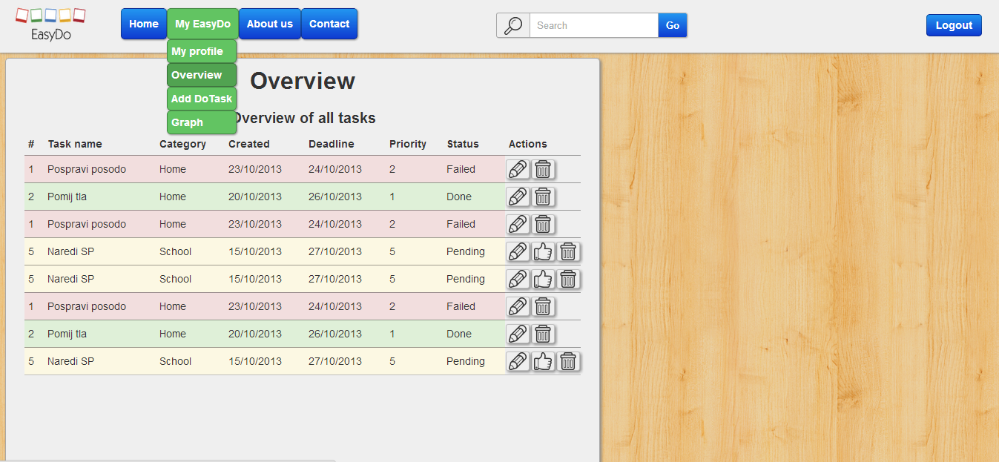

What is EasyDo and what it can do.
EasyDo is an online application based on the to-do list sample. With its features it helps you with managing your daily to-dos and tasks. Whether you are shopping or getting ready for the holidays, EasyDo can always help you.
Sign up for free
All available features this application offers:
- Manage your to-do list
- Add a task with a defined priority
- Delete tasks
- Edit existing tasks
- Add tasks into categories
- Overview of your tasks
- Daily scheduling
- Notifications that an important task is coming
- See your graph of activity

All available features this application offers:
- Smooth graphic design
- Quick overview of all tasks
- Edit your profile
- Calendar